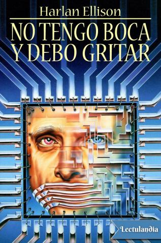
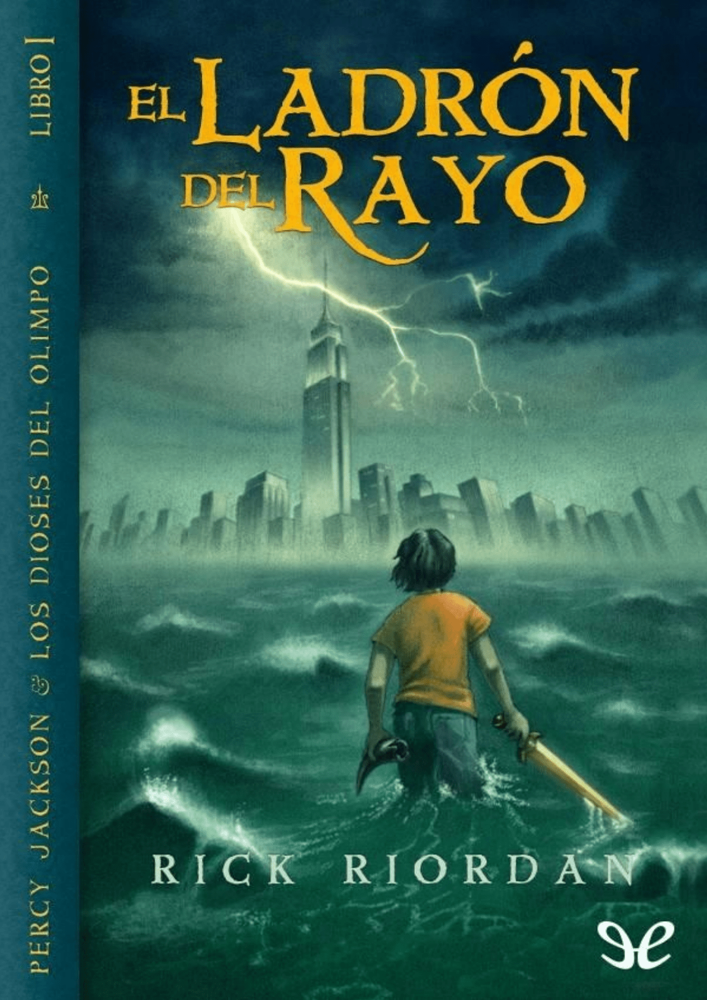
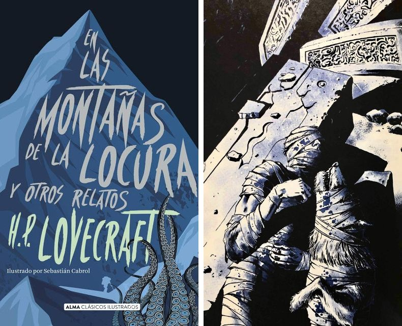

No tengo boca, y debo gritar
Autor: Harlan Ellison
Relato de ciencia ficción sobre una inteligencia artificial que extermina a la humanidad y tortura a los últimos sobrevivientes.

Soy estudiante de la Universidad Tecnológica de Panamá en la carrera de Ingeniería de Software. Me interesa la programación y tengo la meta de crecer profesionalmente hasta alcanzar posiciones de liderazgo, no solo ser un programador más. Me considero una persona responsable, trabajadora y perfeccionista, cualidades que me ayudan a mantener disciplina tanto en mis estudios como en los proyectos que realizo.
En mi tiempo libre disfruto ver anime, jugar videojuegos y ver películas y series. También me gusta aprender constantemente, ya sea en cursos relacionados con tecnología como Azure, o en prácticas de desarrollo web y bases de datos.

Mi sitio web favorito (curioso pero divertido)
Autor: Harlan Ellison
Relato de ciencia ficción sobre una inteligencia artificial que extermina a la humanidad y tortura a los últimos sobrevivientes.

Autor: Rick Riordan
Saga juvenil de aventuras inspirada en la mitología griega, donde Percy descubre que es hijo de un dios olímpico.

Autor: H. P. Lovecraft
Novela de terror cósmico que narra una expedición a la Antártida y el hallazgo de una antigua civilización extraterrestre.

Autor: Dmitri Glujovski
Novela postapocalíptica ambientada en los túneles del metro de Moscú, donde los sobrevivientes luchan contra monstruos y facciones.

Autora: Agustina Bazterrica
Distopía donde el consumo de carne humana se convierte en práctica habitual tras una pandemia global.
Director: Chad Stahelski
Protagonistas: Keanu Reeves, Michael Nyqvist
Directores: Anthony y Joe Russo
Protagonistas: Robert Downey Jr., Chris Evans, Scarlett Johansson
Director: Greg Mottola
Protagonistas: Jonah Hill, Michael Cera
Director: Tim Miller
Protagonistas: Ryan Reynolds, Morena Baccarin
Director: Robert Zemeckis
Protagonistas: Tom Hanks, Robin Wright, Gary Sinise
| Canción | Género | Artista | Álbum / Single | Año |
|---|---|---|---|---|
| Inertia | Pop alternativo | AJR | The Maybe Man | 2023 |
| INERTIA | Anime opening | SawanoHiroyuki[nZk]: Rei | To Be Hero X OST | 2025 |
| A New Type of Hero | OST | To Be Hero X OST | Promotional track | 2025 |
| Kontinuum | Anime ending | SennaRin | To Be Hero X OST | 2025 |
| Believer | Rock alternativo | Imagine Dragons | Evolve | 2017 |
| Mi Persona Favorita | Pop latino | Río Roma | Eres la Persona Correcta en el Momento Equivocado | 2016 |
| Flashback | Anime opening | MIYAVI vs KenKen | Kokkoku OST | 2018 |
| Blue Bird | J-Pop / Anime opening | Ikimono Gakari | My Song Your Song | 2008 |